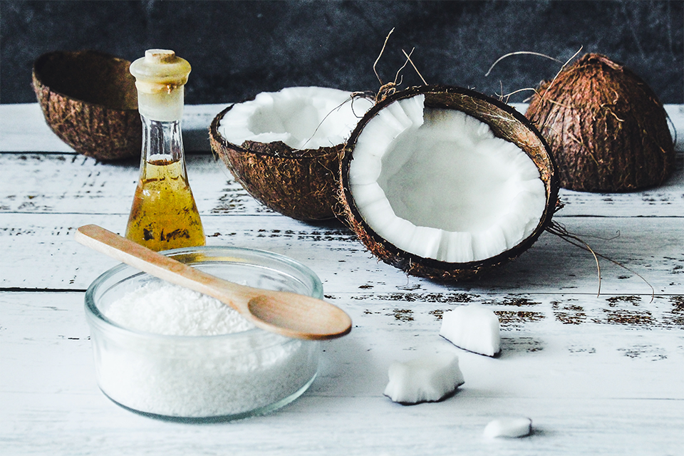

ZÁZRAKY KOKOSOVÉHO OLEJA

Kokosový olej je ako chalan, z ktorého vyrástol poriadny fešák. Dnes je v kurze a všetci o ňom hovoria. Gwyneth Paltrow si ním vyplachuje ústa, aby si vybielila zuby, Poppy Delevingne ho necháva pôsobiť cez noc a Kelly Osborne odporúča vklepať si ho na lícne kosti, aby získali prirodzený lesk. Kokosový olej sám o sebe nehydratuje, rovnako ako iné oleje. Pri vhodnom použití však môže suché vlasy zjemniť, dodať im lesk a pomôcť obnoviť ich poškodenú štruktúru. Prečítajte si deväť spôsobov, ako ho zaradiť do starostlivosti o vlasy.
1. CHRÁŇTE VLASY PRED UMÝVANÍM
Tento trik sa hodí najmä na suché alebo kučeravé vlasy. Asi hodinu pred sprchovaním naneste trochu kokosového oleja na suché vlasy a vynechajte pokožku hlavy. Olej chráni jednotlivé pramene pred vysušením pri umývaní šampónom. Po umytí olej opláchnite a naneste kondicionér ako zvyčajne. Ak máte jemné vlasy, olej ich môže príliš zaťažiť.
2. ZOSILNITE ÚČINOK KONDICIONÉRA
Kokosový olej môže zosilniť účinok každého kondicionéra. Keď kondicionér dôkladne rozotriete po vlasoch, naneste naň vrstvu kokosového oleja. Olej vytvorí ochrannú vrstvu, ktorá udrží hydratačné zložky kondicionéra vo vlasoch a umožní im dlhšie a účinnejšie prenikať do vlasového vlákna. Pred opláchnutím počkajte aspoň 15 minút, prípadne až hodinu. Čím dlhšie počkáte, tým jemnejšie budú vlasy.
3. NECHAJTE HO VO VLASOCH
Tento postup sa hodí na husté a suché vlasy. Po umytí šampónom a použití kondicionéra rozčešte do vlasov hydratačný prípravok. Výborné sú napríklad Supercream od DevaCurls a Hair Dew od Oyin Handmade. Na hydratačný prípravok potom naneste množstvo kokosového oleja približne vo veľkosti mince. Vlasy vysušte ako zvyčajne. Olej pomôže udržať hydratačný prípravok vo vlasoch, takže zostanú dlhšie hydratované.
4. UĽAHČITE SI ROZČESÁVANIE
Máte zamotané vlasy? Naneste trochu kokosového oleja na pramene, ktoré sa ťažko rozčesávajú. Hrebeň sa po nich bude ľahšie kĺzať.
5. DODAJTE VLASOM LESK AJ NA FOTKÁCH
Na prirodzený lesk stačí dať trochu kokosového oleja do rozprašovača a jemne ním postriekať vlasy. Ak olej stuhol, vložte fľaštičku na niekoľko minút do misky s teplou vodou, aby sa olej znova rozpustil.
6. POUŽITE HO AKO PLAVECKÚ ČIAPKU
Čo je na kúpaní najhoršie? To, čo s vlasmi robí slaná alebo chlórovaná voda. Pred odchodom na pláž či do bazéna naneste na vlasy kokosový olej. Do istej miery vytvorí medzi prameňmi a vodou ochrannú vrstvu. Predstavte si ho ako prírodnú plaveckú čiapku, v ktorej ešte aj dobre vyzeráte.
7. SKROŤTE KREPATENIE VO VLHKOM POČASÍ
Medzi prstami rozotrite množstvo kokosového oleja veľké asi ako hrášok. Naneste ho na miesta, kde sa vlasy krepovatejú alebo odstávajú, a pramene uhlaďte. Stačí naozaj málo!
8. ZAMASKUJTE ROZŠTIEPENÉ KONČEKY
Rozštiepené končeky kokosovým olejom nezlepíte. Trvalo ich nespojí žiadny prípravok, hoci niektoré to sľubujú. Olej ich však dokáže na chvíľu zamaskovať. Stačí votrieť malé množstvo do končekov. Dodá im lesk a dočasne ich uhladí.
9. ZBAVTE SA VŠÍ
Kokosový olej je podľa článku prekvapivo účinný. V štúdii z roku 2002 dostávalo 940 detí vlasovú zmes kokosového oleja, anízového oleja a oleja z ylang-ylangu. Zmes im nanášali na vlasy trikrát denne počas piatich dní. Úspešnosť zmesi dosiahla 92,3 %, čo bolo o niečo viac než 92,2 % v kontrolnej skupine, ktorá dostávala liečivý prípravok.
PRI VYPADÁVANÍ VLASOV ANI PRI LUPINÁCH HO NEPOUŽÍVAJTE.
Dôveryhodné recenzované štúdie, ktoré by ukazovali, že kokosový olej podporuje opätovný rast vlasov, chýbajú. Podľa článku zostáva najlepšou voľbou Rogaine. Pri lupinách môže kokosový olej šupinatenie dokonca zhoršiť. Podľa článku pri nanesení na pokožku hlavy upcháva póry a bráni vlasovým folikulom „dýchať“. Pokožka hlavy sa tak vysušuje a lupiny môžu byť výraznejšie. Skúste liečivý šampón.
PRÍNOSY KOKOSOVÉHO OLEJA
Kokosový olej je bohatý na antioxidanty a mastné kyseliny a má protivírusové, protiplesňové a antibakteriálne vlastnosti. Vďaka tomu môže zlepšiť vzhľad, štruktúru a zdravie vlasov. Pri použití na vlasy môže kokosový olej:
- - zmierniť suchosť vlasov
- - zlepšiť stav pokožky hlavy
- - chrániť vlasy pred stratou bielkovín
- - chrániť vlasy pred UV žiarením
- - pomáhať v boji proti infekciám a plesniam
- - podporovať rast vlasov
- - dodať vlasom objem a lesk
S kokosovým olejom môžete mať bohaté, lesklé a zdravé vlasy, ktoré sa ľahko upravujú. Už ste uvažovali, že sa zbavíte bežných kondicionérov, sér a stylingových prípravkov, ktoré môžu časom poškodzovať vlasy a prípadne aj zdravie? Môžete ich nahradiť týmto prírodným prípravkom. Kokosový olej má antimikrobiálne vlastnosti a je bohatý na kyselinu laurovú a mastné kyseliny so stredne dlhým reťazcom. Tie posilňujú vlasy, starajú sa o pokožku hlavy a pomáhajú pri opätovnom raste vlasov. O účinkoch kokosového oleja pri konzumácii sa hovorí už dlho. Pozornosť si zaslúžia aj jeho ďalšie využitia, napríklad ako prírodný prípravok na všestrannú starostlivosť o vlasy. Vďaka vitamínom, minerálom a ďalším živinám pomáha udržať vlasy pevné, lesklé a na pohľad zdravé.